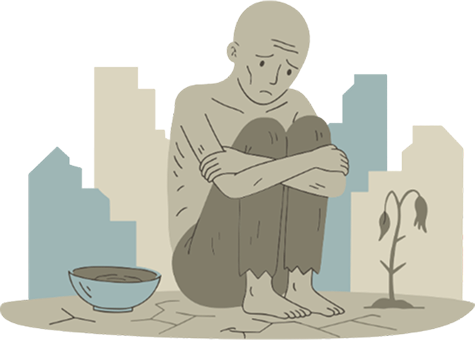

Udara pagi yang segar menyapa ketika Ibu Aruni
selesai membersihkan rumah dan menyiapkan sarapan untuk keluarganya. Hidupnya kini terasa lebih
ringan.
Anaknya sudah lulus kuliah dan bekerja,
sementara warung kecil di samping rumah cukup
untuk memenuhi kebutuhan sehari-hari.

Kemiskinan adalah persoalan klasik yang dihadapi hampir semua negara di dunia. Melalui Perserikatan
Bangsa-Bangsa (PBB), negara-negara berkomitmen untuk menghapus kemiskinan ekstrem pada tahun 2030
sebagai bagian dari Tujuan Pembangunan Berkelanjutan (SDGs).
Namun, Indonesia menargetkan sesuatu yang lebih ambisius, yaitu bebas kemiskinan ekstrem
pada 2024,
enam
tahun lebih cepat dari target global. Program ini menjadi salah satu prioritas nasional yang terus
dijalankan lintas pemerintah.